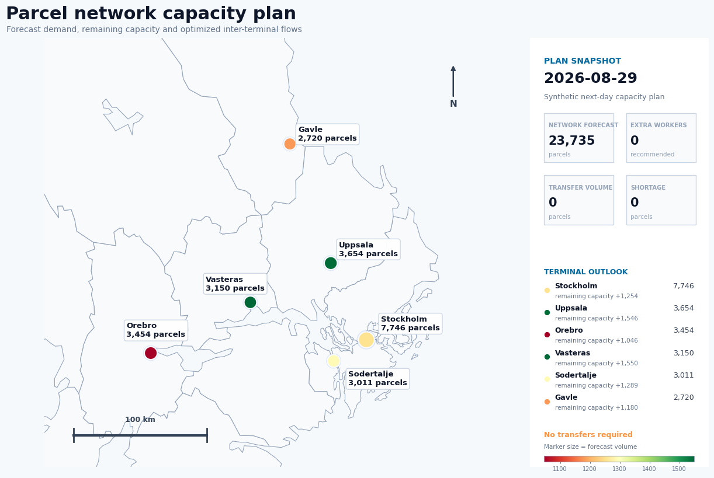

Parcel Network Forecasting & Capacity Optimization#
Portfolio case study — synthetic data
This project demonstrates an end-to-end data-science workflow for parcel logistics:
Explore parcel volumes across a small terminal network.
Build time-series features and compare forecasting approaches.
Forecast near-term parcel demand.
Convert the forecast into an operational capacity decision.
Use mixed-integer optimization to choose extra staffing and inter-terminal volume transfers.
Visualize the resulting network decisions geographically.
Important: All parcel volumes, terminal capacities, costs, and operational assumptions in this case study are synthetic. The project is inspired by common parcel-logistics planning problems and does not use proprietary company data.
Business question#
A parcel operator manages six regional terminals. Daily parcel volumes vary by weekday, season, local demand, and campaign effects. If forecast demand exceeds terminal capacity, the operator can:
add temporary staff,
use overtime-like extra capacity,
transfer a limited share of parcels to another terminal,
or accept a costly capacity shortage.
The objective is to use forecasts to make a practical next-day capacity plan at minimum expected cost.
1. Imports and reproducibility#
The workflow uses:
pandas / NumPy for data preparation,
scikit-learn for machine-learning forecasting,
SciPy MILP for capacity optimization,
Plotly for interactive analytical plots,
GeoPandas / Matplotlib for the fixed geographic decision map.
| date | terminal | parcel_volume | weekday | month | is_weekend | lag_1 | lag_7 | lag_14 | rolling_mean_7 | rolling_std_7 | |
|---|---|---|---|---|---|---|---|---|---|---|---|
| 0 | 2026-01-01 | Gavle | 2665 | 3 | 1 | 0 | NaN | NaN | NaN | NaN | NaN |
| 1 | 2026-01-02 | Gavle | 3018 | 4 | 1 | 0 | 2665.0 | NaN | NaN | NaN | NaN |
| 2 | 2026-01-03 | Gavle | 1977 | 5 | 1 | 1 | 3018.0 | NaN | NaN | NaN | NaN |
| 3 | 2026-01-04 | Gavle | 1575 | 6 | 1 | 1 | 1977.0 | NaN | NaN | NaN | NaN |
| 4 | 2026-01-05 | Gavle | 2953 | 0 | 1 | 0 | 1575.0 | NaN | NaN | NaN | NaN |
2. Understand the synthetic network#
The six terminals are placed in Swedish cities to create a realistic geographic setting, but they are fictional logistics facilities.
Each terminal has:
a normal daily processing capacity,
extra capacity contributed by each temporary worker,
a limit on temporary workers,
a synthetic daily worker cost.
| terminal | lat | lon | base_capacity | worker_capacity | max_extra_workers | worker_cost_sek | |
|---|---|---|---|---|---|---|---|
| 0 | Stockholm | 59.3293 | 18.0686 | 9000 | 600 | 6 | 1700 |
| 1 | Uppsala | 59.8586 | 17.6389 | 5200 | 520 | 5 | 1450 |
| 2 | Vasteras | 59.6099 | 16.5448 | 4700 | 500 | 5 | 1380 |
| 3 | Sodertalje | 59.1955 | 17.6253 | 4300 | 500 | 4 | 1360 |
| 4 | Orebro | 59.2753 | 15.2134 | 4500 | 520 | 5 | 1400 |
| 5 | Gavle | 60.6749 | 17.1413 | 3900 | 480 | 4 | 1320 |
| count | mean | std | min | max | |
|---|---|---|---|---|---|
| terminal | |||||
| Gavle | 240 | 3197.0 | 838.0 | 1402 | 5927 |
| Orebro | 240 | 3730.0 | 932.0 | 1776 | 5937 |
| Sodertalje | 240 | 3511.0 | 886.0 | 1571 | 6129 |
| Stockholm | 240 | 8041.0 | 1969.0 | 3729 | 12014 |
| Uppsala | 240 | 4373.0 | 1117.0 | 2085 | 8091 |
| Vasteras | 240 | 3802.0 | 954.0 | 1566 | 6005 |
Operational interpretation#
The series contains:
strong weekday effects,
slower seasonal changes,
gradual trend,
terminal-specific variation,
a few synthetic campaign spikes.
This matters because a naive average can miss recurring demand patterns. A forecasting model should therefore use lagged demand and calendar features.
3. Feature engineering#
For every terminal, create:
parcel volume 1 day ago,
parcel volume 7 days ago,
parcel volume 14 days ago,
rolling 7-day mean and standard deviation,
weekday, month, and weekend indicator.
These are all features that would be available before the next-day planning decision.
| date | terminal | parcel_volume | weekday | month | is_weekend | lag_1 | lag_7 | lag_14 | rolling_mean_7 | rolling_std_7 | |
|---|---|---|---|---|---|---|---|---|---|---|---|
| 14 | 2026-01-15 | Gavle | 2360 | 3 | 1 | 0 | 2775.0 | 2618.0 | 2665.0 | 2622.142857 | 638.329442 |
| 15 | 2026-01-16 | Gavle | 2844 | 4 | 1 | 0 | 2360.0 | 3473.0 | 3018.0 | 2585.285714 | 646.010762 |
| 16 | 2026-01-17 | Gavle | 1725 | 5 | 1 | 1 | 2844.0 | 1900.0 | 1977.0 | 2495.428571 | 536.400925 |
| 17 | 2026-01-18 | Gavle | 1402 | 6 | 1 | 1 | 1725.0 | 1654.0 | 1575.0 | 2470.428571 | 571.694224 |
| 18 | 2026-01-19 | Gavle | 3031 | 0 | 1 | 0 | 1402.0 | 2975.0 | 2953.0 | 2434.428571 | 635.992363 |
4. Time-based train/test split#
A logistics forecasting model must be evaluated on the future, not on randomly shuffled observations.
The last 40 days are therefore held out as a test period.
Training period: 2026-01-15 to 2026-07-19
Test period: 2026-07-20 to 2026-08-28
Training rows: 1116 | Test rows: 240
5. Baseline forecast#
A useful forecasting project should not jump directly to machine learning. First create a transparent benchmark.
Here the baseline is:
next demand ≈ demand on the same weekday one week earlier
That is simply lag_7.
| model | MAE | RMSE | |
|---|---|---|---|
| 0 | 7-day lag baseline | 465.6 | 657.8 |
6. Machine-learning forecast#
A Random Forest is used as a practical nonlinear benchmark. It can learn interactions between:
recent demand,
weekly lag,
rolling statistics,
weekday/month,
terminal identity.
For a production forecasting system, I would also consider SARIMA, gradient boosting, probabilistic forecasts, hierarchical forecasting, and explicit holiday/event features.
| model | MAE | RMSE | |
|---|---|---|---|
| 0 | 7-day lag baseline | 465.6 | 657.8 |
| 1 | Random Forest | 424.2 | 602.8 |
7. Forecast next-day parcel volume#
The forecasting model is now refit on all available historical observations.
For each terminal, we construct the features that would be known before the next day begins.
| terminal | forecast_volume | base_capacity | capacity_gap_before_action | |
|---|---|---|---|---|
| 4 | Orebro | 3454 | 4500 | -1046 |
| 5 | Gavle | 2720 | 3900 | -1180 |
| 0 | Stockholm | 7746 | 9000 | -1254 |
| 3 | Sodertalje | 3011 | 4300 | -1289 |
| 1 | Uppsala | 3654 | 5200 | -1546 |
| 2 | Vasteras | 3150 | 4700 | -1550 |
8. Turn forecasts into a capacity-planning problem#
A forecast is only useful if it changes a decision.
For the next day, the operator may:
add temporary workers at each terminal,
transfer some forecast parcel volume between terminals,
accept a remaining shortage at a high penalty.
Decision variables#
For terminal \(i\):
\(w_i\): integer number of extra workers,
\(s_i\): unserved / shortage volume.
For a directed transfer \(i \rightarrow j\):
\(t_{ij}\): parcels transferred from terminal \(i\) to terminal \(j\).
Objective#
Minimize:
Capacity constraint#
For every terminal:
where \(C_i\) is base capacity, \(q_i\) is the capacity added per worker, and \(\hat{D}_i\) is forecast demand.
Here, outbound transfers reduce the volume that must be processed at the origin, while inbound transfers increase the load at the destination.
Transfers are deliberately capped so the optimizer cannot unrealistically move the entire network.
| from | to | distance_km | |
|---|---|---|---|
| 0 | Stockholm | Uppsala | 63.6 |
| 1 | Stockholm | Vasteras | 91.6 |
| 2 | Stockholm | Sodertalje | 29.3 |
| 3 | Stockholm | Orebro | 162.2 |
| 4 | Stockholm | Gavle | 158.3 |
Optimization success: True
Objective value (SEK): 0.0
| terminal | forecast_volume | base_capacity | worker_capacity | extra_workers | extra_staff_capacity | shortage | outbound_transfer | inbound_transfer | effective_load_after_transfer | capacity_after_staffing | remaining_capacity | |
|---|---|---|---|---|---|---|---|---|---|---|---|---|
| 0 | Stockholm | 7746 | 9000 | 600 | 0 | 0 | 0 | 0 | 0 | 7746 | 9000 | 1254 |
| 1 | Uppsala | 3654 | 5200 | 520 | 0 | 0 | 0 | 0 | 0 | 3654 | 5200 | 1546 |
| 4 | Orebro | 3454 | 4500 | 520 | 0 | 0 | 0 | 0 | 0 | 3454 | 4500 | 1046 |
| 2 | Vasteras | 3150 | 4700 | 500 | 0 | 0 | 0 | 0 | 0 | 3150 | 4700 | 1550 |
| 3 | Sodertalje | 3011 | 4300 | 500 | 0 | 0 | 0 | 0 | 0 | 3011 | 4300 | 1289 |
| 5 | Gavle | 2720 | 3900 | 480 | 0 | 0 | 0 | 0 | 0 | 2720 | 3900 | 1180 |
transfers
[]
9. Geospatial decision view#
A map is useful because capacity balancing is partly a spatial problem: a nearby terminal may be a much more practical overflow destination than a distant one.
The fixed GeoPandas map below uses Swedish county boundaries as geographic context and shows:
terminal location,
forecast demand,
base capacity,
recommended extra workers,
optimized transfer links.

10. Decision-support summary#
The purpose of the project is not to claim that one forecasting algorithm or one optimization formulation is universally best.
The important workflow is:
raw parcel data → demand pattern → forecast → capacity gap → optimized action → operational recommendation
A useful management summary would answer:
Which terminals are expected to exceed normal capacity?
How much extra staffing is justified?
Can some overflow be moved to nearby terminals?
What is the expected cost of the plan?
Is any shortage still unresolved?
Which forecasts are most uncertain and therefore need manual attention?
This creates a direct connection between data science and logistics operations.
Planning date: 2026-08-29
Forecast network volume: 23,735 parcels
Recommended extra workers: 0
Recommended transferred volume: 0 parcels
Remaining shortage: 0 parcels
Estimated optimized cost: 0 SEK
11. Limitations and next steps#
This is intentionally a compact portfolio case study. A production system would need substantially more work.
Forecasting#
Possible improvements:
longer historical series,
Swedish public-holiday and campaign calendars,
weather and disruption signals,
probabilistic forecasts instead of point forecasts,
forecast intervals,
terminal-level and network-level hierarchical reconciliation,
systematic hyperparameter tuning,
monitoring for model drift.
Optimization#
The current model simplifies real logistics. Future versions could include:
shift scheduling,
vehicle capacity,
line-haul departure times,
service-level constraints,
explicit origin-destination parcel flows,
route optimization,
terminal opening hours,
trailer availability,
transfer lead time,
stochastic or robust optimization using forecast uncertainty.
Geospatial analysis#
A richer network model could include:
road-network travel times rather than straight-line distance,
delivery-area polygons,
customer-density surfaces,
route clusters,
terminal catchment optimization.
What this case study demonstrates#
time-series forecasting,
feature engineering,
model benchmarking,
Python / pandas / NumPy / scikit-learn,
mixed-integer optimization,
operational capacity planning,
resource allocation,
geospatial visualization,
translating analytical output into practical decision support.